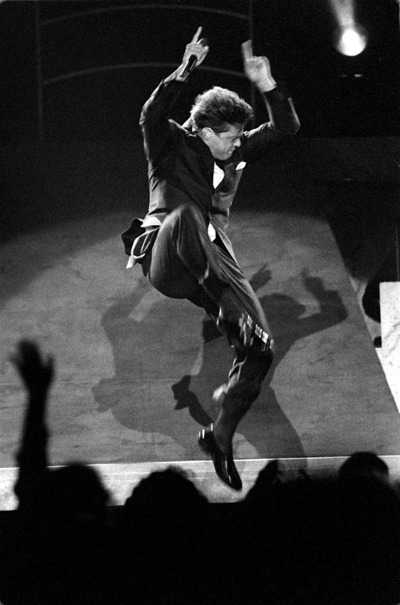

Luis Miguel Gallego Basteri nació el 19 de abril de 1970 en San Juan, Puerto Rico. Desde su niñez mostró un talento excepcional para la música, y a la edad de 12 años, lanzó su primer álbum que lo catapultó a la fama. A lo largo de su carrera, ha lanzado más de 30 discos y ha ganado múltiples premios, incluidos Grammys y Latin Grammys.
Su estilo musical abarca géneros como bolero, pop, y balada romántica, convirtiéndose en uno de los artistas más importantes de la música latina.
